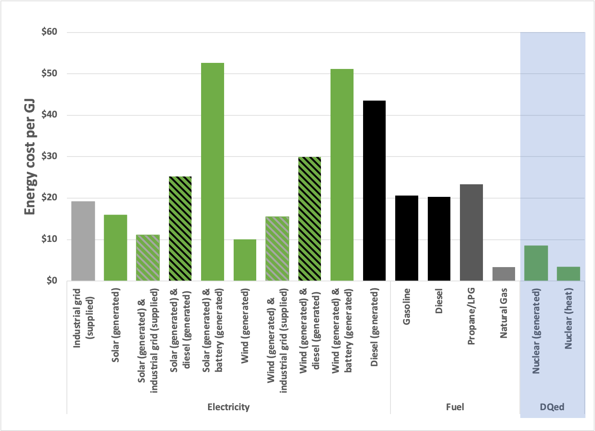

I’m Jonathan Burbaum, and this is Healing Earth with Technology: a weekly, Science-based, subscriber-supported serial. In previous installments of this serial, I have offered a peek behind science headlines, focusing on climate change/global warming/decarbonization. I have welcomed comments, contributions, and discussions, particularly those that follow Deming’s caveat, “In God we trust. All others, bring data.” Recently, I’ve pivoted to a more direct approach.
COP26 is behind us, and, like its 25 predecessors, it’s produced a series of toothless political commitments that are loosely based on recommendations given by large teams of scientists. Sadly, while intellectually honest, such approaches are seriously limited in scope and thus doomed to failure in the long run. Given the continued naive commitments of our leaders, I must now propose a more aggressive pitch:
One planet. One solution. Now.
That’s intentionally provocative but not prescriptive. No treatment has all the answers. But we must prepare to act with clear-headed decisions—any partial solution should be required to bring the rest of the solution to the table and specify the tradeoffs. We won’t get too many chances to get it right.
You can read Healing for free, and you can reach me directly by replying to this email. If someone forwarded you this email, they’re asking you to sign up. You can do that below.
If you really want to help spread the word, then pay for the otherwise free subscription. I use any money I collect to increase readership through Facebook and LinkedIn ads.
“I am trying as far as possible again this time, as I did last time, to start with perfectly plain truisms. My desire and wish is that the things I start with should be so obvious that you wonder why I spend my time stating them. This is what I aim at, because the point of philosophy is to start with something so simple as not to seem worth stating, and to end with something so paradoxical that no one will believe it.” Bertrand Russell, as quoted in “The Philosophy of Logical Atomism” by David Pears (1985). Original quote from a series of lectures that Russell delivered in 1918.
The quote emphasizes the incredible power of logic, starting with what we know to be accurate and extending the truth, at times, to unbelievable ends. There are unmistakable parallels between this quote and the logic of earlier installments: Starting from first principles and hard data, the paradoxical conclusion that nuclear energy technology can solve our most serious environmental problem without destroying the world economy emerged. If this is news to you, I recommend rewinding and playing from the beginning.
I’ve introduced the word “holoeconomics” as a framework to understand the economics of energy and use economic leverage to steer the planet away from climate change. It’s time to close the loop.
Let’s return to the problem:
The increase in carbon dioxide levels in the atmosphere, attributable to human extraction and combustion of geologic carbon over 350 years of industrialization, threatens to destabilize Earth’s climates.
And the proposed solution.
We must reduce the quantity of already-emitted carbon dioxide, not simply reduce the rate of its increase by “decarbonization” of our energy supply.
Using any direct engineering approach to remove carbon dioxide from the air is prohibitively expensive in energy costs alone.
As a source of energy, sunlight is free, and photosynthesis is the only process that creates economic value from atmospheric carbon dioxide.
Earth has enough land and water to increase natural photosynthesis: Salt-free water is the primary limitation.
Desalination at the scale needed still requires enormous amounts of new energy from carbon-free sources.
Combining existing technologies of:
Assembly-line manufacturing of large ships,
Desalination, and
Nuclear energy
can hit both the scale and cost targets needed to proceed without subsidies.
How does this relate to holoeconomics? Well, there are many, many technically-sound ways of absorbing carbon dioxide. The main issue is economics. My favorite foil, Elon Musk, believes (to the tune of $100M) that what is needed is cleverness. Specifically, he’s funded an XPRIZE competition with a $50M “grand prize” and $10M prizes for runners-up. In a nutshell, here’s what success will look like:
To win the prize teams must demonstrate CO2 removal at the 1000 tonne per year scale, model costs at the million ton per year (megatonne) scale, and present a plan to sustainably reach gigatonne per year scale in future. In the first phase of the competition, teams must demonstrate the key component of their carbon removal solution, at a minimum.
That sounds like a lot of money! But let’s put that in perspective. Elon reportedly sold $16.4 billion of Tesla stock in 2021, so he’s staking less than 1% of his income (and an even smaller fraction of his assets). Moreover, the XPRIZE flows through the Musk Foundation (a charitable organization), so it’s a tax deduction. Thus, at least $38M of his stake is what he would have had to pay to Treasury anyway. In stark contrast, it is a lot of money to the participants. Globally, over 4,500 registered teams have registered. Picking a winner from among the teams will be hard for several reasons, including:
Choosing a complex problem in economics rather than technology,
Evaluating the winner with a panel of experts rather than the markets, and
Awarding unreasonably large prizes at the end, with no funding for prototyping or auditing.
It is also a lot of carbon dioxide. But let’s put that in perspective. Human emissions from the combustion of geologic carbon in 2018 were about 35 gigatonnes. Nearly half of that was used for electric power and heat1, two forms of energy that cannot be stored or carried over long distances, unlike geologic carbon.
Returning to the XPRIZE, three components comprise victory: Demonstrate an annualized kiloton of CO2 removal, model costs of a megaton, and describe sustainable deployment at gigatons. The last one is transformational if sustainable, but only the first one generates hard data, which participants could achieve by running an apparatus for an hour and measuring 115 kg of CO2 captured. The second objective, the cost model, is both essential and irrelevant. It’s essential because the economics of direct air capture is the fundamental problem of climate change. But, it’s irrelevant because the competitors don’t have P&L responsibility. In other words, because they don’t have any skin in the game, the process will reward them for subtle but unrealistic assumptions of scalability.
The XPRIZE team has released a set of spreadsheets that propose common assumptions about cost and carbon impact to mitigate this tendency. I am pretty familiar with that approach since I used it ten years ago at ARPA-E as part of the application process for my $62M program, PETRO. The downside of a prescriptive approach is that constraining assumptions creates a box that constrains solutions. In my case, the most disruptive solutions to the PETRO problem ignored the premises of the spreadsheets!
Musk offers a huge prize, and I have developed a logical solution. So, I can hear some of you asking me, “Why don’t you take a shot?” There’s probably deep psychology involved, but the honest answer is, “I don’t really want to.” I’d need to assemble a team and figure out a way to elbow my way into the competition after the application deadline has passed. The fundamental truth is that such competitions are beauty pageants, while the market will ultimately determine the value of innovation. I’ve personally reviewed thousands of proposals, so I know that “winning” is only marginally related to the operability of the solution. Winning such a proposal competition depends on the particulars of the application and the propensities of the judges.
Let’s analyze the XPRIZE assumptions for energy:

Except for the blue box, values are converted from the Cost Worksheet v. 1.3 inputs for North America, using standard conversion units. Values for nuclear electricity are from Statista. The heat value of nuclear was derived assuming a 40% efficiency of heat to electricity. Bars are color-coded according to carbon intensity. Green bars are zero-carbon, black and gray bars represent carbon-based energy sources. When combined, the mixture is indicated by the slashed patterns.
Note that these numbers are puzzling. Why does the energy cost go down when solar electricity is augmented by an industrial grid, while it goes up when wind electricity is similarly boosted? I don’t know, but these numbers are what XPRIZE has provided to its contestants. Because they’re pro forma, the absolute numbers are not that important anyway—green energy will cost $10-$20 per GJ if used immediately. The cost rises if the energy must be stored or supplemented. As a heat source, nothing beats natural gas, but nuclear is the clear choice if carbon-free is a requirement (even though it’s not part of the spreadsheet provided).
The landscape of energy and carbon costs is much more complicated. First, as I’ve pointed out before, electricity is produced locally, on-demand, and an electron is an electron. Therefore, it can’t be labeled “green” except as a marketing ploy. So, practically, any proposal that relies on the grid for power shouldn’t be labeled “green” either. Using fixed or average costs for electricity is simplistic and inaccurate (as anyone who paid a utility bill last winter in Texas can attest to). Further, carbon accounting should be audited using instrumentation, not calculated on a spreadsheet. Finally, the atmosphere is agnostic—a molecule of carbon dioxide from geologic carbon combustion is the same as one emitted from a biological system.
So, if I were helping to select the winner, I would have added the constraints:
All energy used must carbon-free,
If reliant on electric power, the entire system should be designed to be self-contained and isolated from the grid, and
Solutions that employ surplus or waste energy creatively are encouraged.
This approach would eliminate applications that use geologic carbon to capture prior emissions, lowering the temptation to use accounting tricks. Consequently, applicants would need to rely on intermittent renewables like wind and solar, or baseload (always on) carbon-free sources like nuclear. But, I’m not part of the process. I’m just observing it with an experienced eye.
Let’s now look at the energy costs of carbon capture, according to IEA:
There are lots of assumptions in these numbers. We need to remove CO2 from the atmosphere and store most of it, so the energy costs are about 7 GJ heat and 3 GJ electricity. The “use” aspect only recovers about 0.5 GJ of the energy needed for capture.
It’s seductive to imagine that we will achieve Nirvana if we add more detail and thought to these models to build out more complicated spreadsheets with increasingly precise numbers. But, that’s what my Ph.D. supervisor, Jeremy Knowles, would have gleefully referred to as “mental masturbation,” replacing logic and refined thoughts with complexity and circular reasoning. The quote (source unknown) that comes to mind is, “If you can’t dazzle them with brilliance, baffle them with bullshit. If you cannot baffle them with bullshit, confuse them with committees.” Or, I might add to the last phrase, “Intergovernmental Panels.”
Instead of striving for accuracy at the expense of clarity, let’s take a holoeconomic view. Combining the IEA and XPRIZE numbers indicates that energy alone will cost $50 to $100 per ton of CO2 captured to run a DAC system. If we only capture the 17 Gt attributed to electricity and heat production, that would cost $0.8-1.7 trillion annually if we simply store the product. That’s a lot of money, but energy is vast, so how does that compare to the global electricity market? For the global generation, transition, and distribution of electric power, the market is estimated to be $3.2-$3.5 trillion. So, to a broad and coarse approximation, we’re talking about a baseline cost of cleanup that’s roughly half of Earth’s electricity generating capacity!! That’s to maintain today’s atmosphere without doing what’s required: Cleaning up past emissions. It’s not a simple “tax” on emissions to pay a minimal amount for cleanup. It’s a prohibitive expense that would change the world economy.
Note how taking the holoeconomic perspective makes it much easier to separate good ideas from the bad. The XPRIZE/spreadsheet approach means that any energy source comes at a fixed cost. In that case, the market value of the product has to be enormous, capable of approaching the economic value of global electricity. So it doesn’t matter how clever an idea or the proposal is. The final milestone is the only one that matters. If humans cannot credibly deploy any proposed technology at the gigaton scale without creating a commercially valuable product at the same scale, then the proposal is simply not worth funding. If XPRIZE set such a high bar, participation numbers (if vetted) would drop from >4,500 to fewer than ten. This would lead to less publicity but more relevancy. The prizes could be tranched, with a lot more help and attention given to each participant: A success for one becomes a success for all. In the end, fewer competitors would make picking a winner a helluva lot easier and ensure that the cost estimates weren’t glorified fiction.
There’s a final problem induced by arbitrarily setting fixed values for energy rather than acknowledging that the costs can vary by time and place. One approach that has been floated in informal conversation is to use intermittent sources of electricity (like wind and solar) when they are not needed to power the grid. Using surplus, intermittent energy to capture carbon would decrease costs dramatically. Focusing on intermittent carbon capture technologies that could ramp up and down quickly when consumers needed the power elsewhere would require significant innovation. If this method were coupled with a source of low-grade “waste” heat, then the energy costs might decrease dramatically.
But, again, a dependable path leads back to nuclear energy. Unlike other carbon-free sources, it provides a source of high-temperature heat that turbines can convert efficiently to electricity, and ample low-grade heat. An open ocean desalination plant, if based on nuclear, could be augmented with today’s carbon capture technology to remove even more carbon per unit energy and bury it (naturally) deep in the ocean, if the numbers worked out.
Until next week…
Thank you for reading Healing the Earth with Technology. This post is public so feel free to share it.
{kind=link}